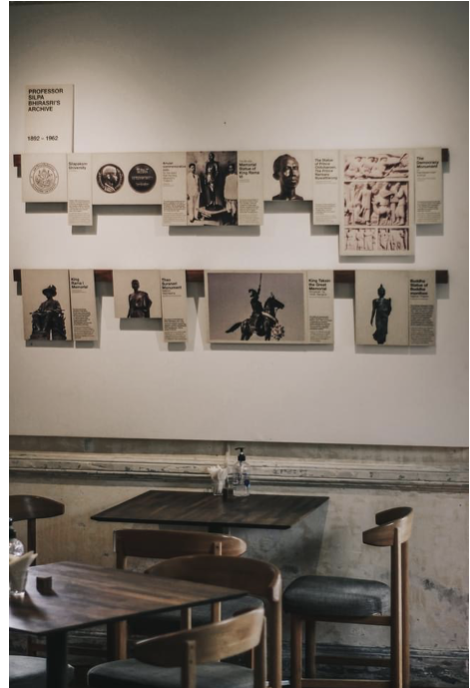

Craftman Roastery opened inside the former house of Professor Silpa Bhirasri, near Sang Hi Bridge in Bangkok. The design turns a coffee visit into a museum visit: guests read the professor's story, see his sketches on the glass, and drink coffee among his photographs.
Craftman Roastery sits inside the former house of Professor Silpa Bhirasri, near Sang Hi Bridge in Bangkok. The Italian-born professor founded modern art education in Thailand, and his home deserved more than a standard cafe fit-out. The brief grew from the building itself: honor the man who lived here.
So the concept became a museum, not just a cafe. Every design decision serves both readings of the space. You can come for the coffee, stay for the story, and leave knowing who Silpa Bhirasri was.


The house tells the professor's story at every turn:
An archive exhibition presents his life and works — from the Memorial Statue of King Rama VI to the Democracy Monument relief — so guests can read his biography over coffee.
The professor's sketch works are printed on the shop's window glass, turning daylight into a display case.
Photographs of the professor decorate the rooms of the cafe, keeping his presence in the space.
His quotes are printed on the window glass in decorative Thai lettering. The windows became a photo spot in their own right.